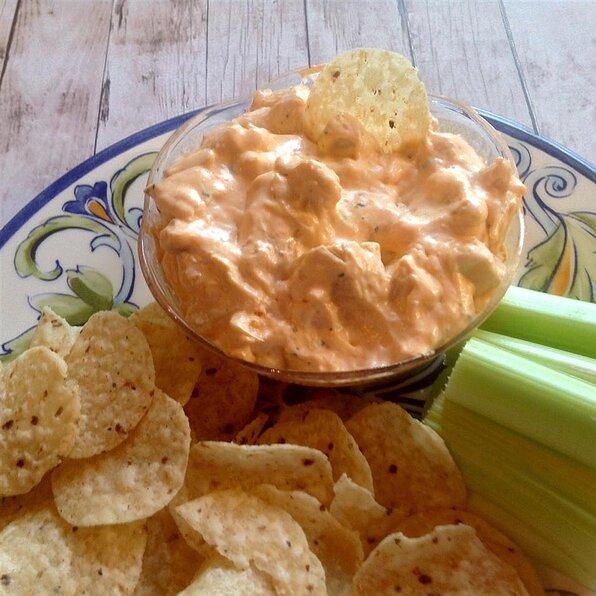

Buffalo Dip

Description
This hearty party dish is sure to be a hit at the next party! It's the
perfect mix of heat with the slight tanginess that will seal it together
with delicious chicken.
This recipe is quick, easy, and most importantly delicious!
Ingredients
- 2 cups diced cooked chicken
- 1 (8 ounce) package cream cheese, softened
- ½ cup blue cheese salad dressing
- ½ cup hot pepper sauce (such as Frank's RedHot®)
- ½ cup crumbled blue cheese (Optional)
- ¼ cup ranch dressing, or to taste
Directions
-
Stir chicken, cream cheese, blue cheese dressing, hot pepper sauce,
crumbled blue cheese (Optional), and ranch dressing together in
a slow cooker.
-
Cook in the slow cooker on High until heated through, about 20 minutes.
- Eat and enjoy!